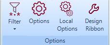
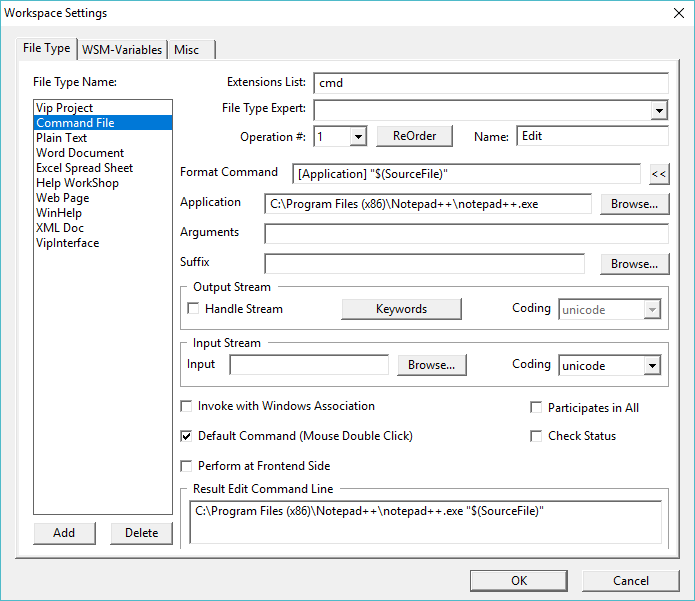
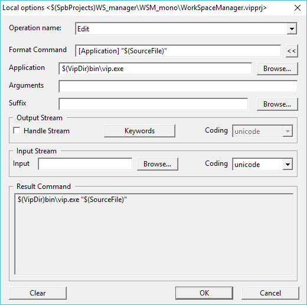
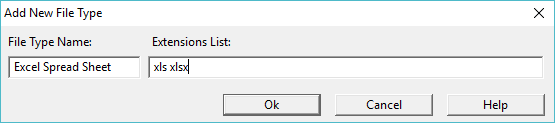
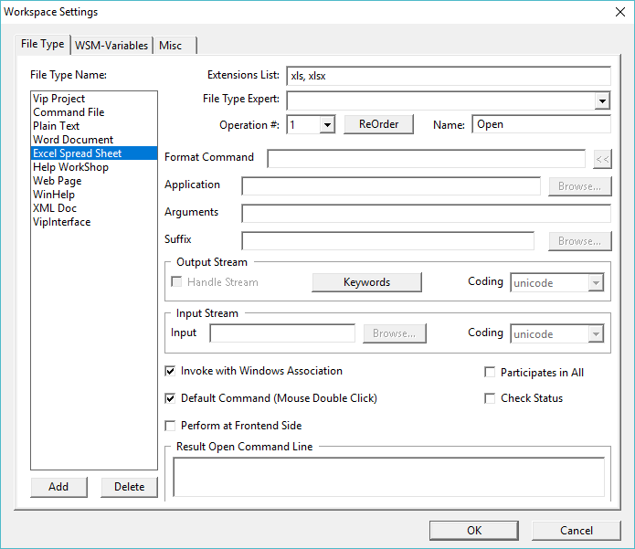
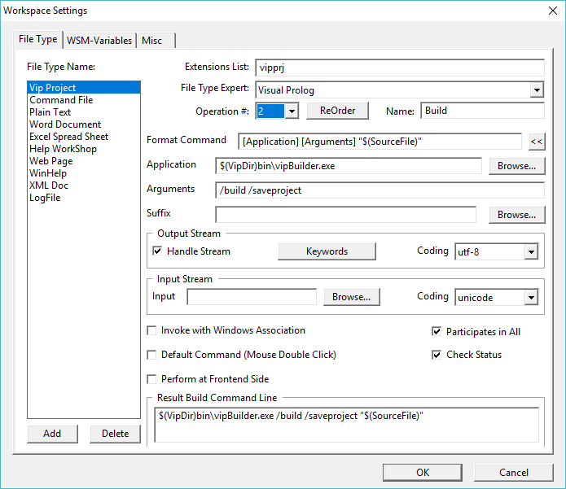
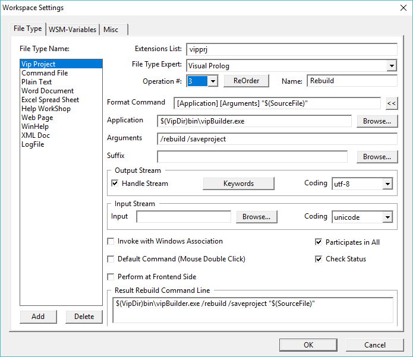
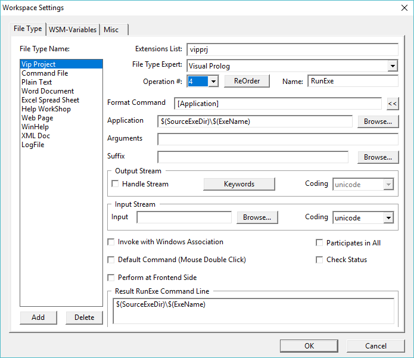

Copyright (c) Prolog Developemnt Center SPb
WorkSpace Manager
Version 2.0
Identify file types and operations
The
set of operations for the selected file type is one of the most
important properties that determine how to work with the application.
Setting file types and operations is done in the settings dialog in the File Type tab, which is called by the Options button.

The properties set in the form of the Options button are set for each operation of all files of this type.

However, for each specific file, the properties can be changed by calling the form with the Local Options
button. This form follows the form for setting common properties. Any
of the properties can be changed here and will be valid only for the
selected file.

The
figure shows a list of file types, which is not necessarily present in
the application initially, but some types already provided in it.
To add and define a new file type:
- click the Add button.
- in the window that appears, type the name of the file type you like and the extension corresponding to it, for example, xls.
If several file types should be processed in the same way, then file extensions should be listed separated by a space, comma or semicolon, as shown in the figure (a space is shown).

For the selected extension, the form fields will contain the suggested values.

For
each type of file, one to four processing methods can be defined, the
numbers of which are contained in the drop-down list of the field
Op # [Index].
The default method is index 1 and the name Open, which can be changed in the Name field.
All operations are ordered and the position of each operation in the list is important.
If definitions of operations have already been created, then with the ReOrder button you can assign any operation to another number (swap).
Deleting the name of an operation leads to release of a place in the list.
If
the file of this type is to be processed in the standard way according
to the association established in the Windows system, then the Invoke
with Windows Association flag should be checked (which is offered by
default).The following three flags have the following assignments:
- Default Command (Mouse Double Click) - if the flag is set, then the operation with the index, which is set in the [Index] field will be invoked by double-clicking (or Enter)
on the file in the workspace file list. Only one of the four operations
can have this flag set. Attempting to set this flag for another
operation will trigger a warning and require confirmation.
- Partcipate in All - if the flag is set, then the operation with the index set in the [Index]
field will be performed for files of this type, if a group operation
with this index is activated for the list of files. Otherwise, the
operation will not be activated.
- Check Status
- if this flag is set, then during the group operation the current
state of the file is checked. If in the past the operation on the file
of this type was successful (state Done), then the operation is not performed again. Which of the four operations resulted in a Done state is not considered.
If the Invoke with Windows Association flag is turned off, then the operation description is used, set in the form.
The Perform at Frontend Side flag determines in which context the operation is performed. By default, all operations are performed in the context of BackEnd. For the Mono-application, the execution context does not change anything in the behavior, and if the FrontEnd and the BackEnd
are located on different computers, then the context must provide the
appropriate behavior (for the time being is not supported).
The basis is the command structure defined in the Format Command field.
The command is constructed by selecting the possible elements from the drop-down list using the "<<" button.
The elements of the list are:
- Browse ... - calls the file dialog and adds the selected file to the format line;
- [Application] - indicates the value of the Application field (the field below the Format Command field);
- [Argument] - indicates the value of the Arguments field (the field below the Application field);
- [Suffix] - indicates the value of the Suffix field (the field below the Arguments field);
- $(SourceFile)
- the full name of the file from the list of the workspace to be
processed (in some cases, if the route to the directory contains
spaces, you may need to enclose $(SourceFile) in quotes);
- $(SourceName) - file name only;
- $(ExeName) - the name of the executable file;
- $(SourceExeDir) - directory in which the executable file is located.
The last two positions require clarification.
The
concept of "executable file" and "directory of the location of the
executable file" - entities related to the nature of the file of the
workspace. So, with reference to a project file with the .vipprj extension of the Visual Prolog system, the executable file is the file generated by the project itself in the directory defined in the project itself. The WorkSpace Manager
application does not "know" anything about what and where the
executable file is created. But to run this executable file from the WorkSpace Manager
application, such information is necessary. For another similar
"project" file, during its processing, the location and name of the
generated executable file are determined by their own rules.
Therefore, the WorkSpace Manager
application provides the ability to connect components (plugins) that "know" how
to determine the location and name of the executable file from the
contents of the project file. The application accesses the component
whose name is specified in the FileType Expert
field, and this component (plugin), as a result of analyzing the project file,
returns the desired location and name of the executable file.
In the current version, the component’s WorkSpace Manager application for the Visual Prolog system is embedded. A component for any other similar project should be developed and connected to the WorkSpace Manager application (not supported in the current version).
The WorkSpaceManager
application for each file type can assign properties to the input and
output streams. For an input stream, this only applies to executable
applications (for example, .exe, .cmd).
The output stream is processed if the Handle Stream flag is set. At the same time, the settings are:
The Handle Output Stream
flag refers only to console applications, that is, applications that
output their messages to the console. Applications using the window
system are not affected by this flag.
- KeyWords
- a list of keywords that are used to determine the success or failure
of processing a file by their appearance in the output stream.
- Coding - the expected encoding of the characters of the output stream.
For the input stream can be set the full file name (selected by the Browse
button), the contents of which can be transferred to the input stream
of the executable application and the character encoding of the input
stream (the Coding field).
The following are the figures for the four processing operations of the Visual Prolog system project file:
- Edit - calls the project for editing, that is, calls the Visual Prolog programming system (Vip.exe), which opens the project file and then works independently of the WorkSpace Manager application;
- Build - calls the program VipBuilder.exe,
which builds an executable application based on the project file. In
this case, only files that have been modified since the last build are
compiled;
- Rebuild - removes all traces of previous compilations and causes the complete construction of the executable application;
- RunExe - calls into execution an application built as a result of performing a Build or Rebuild operation.



